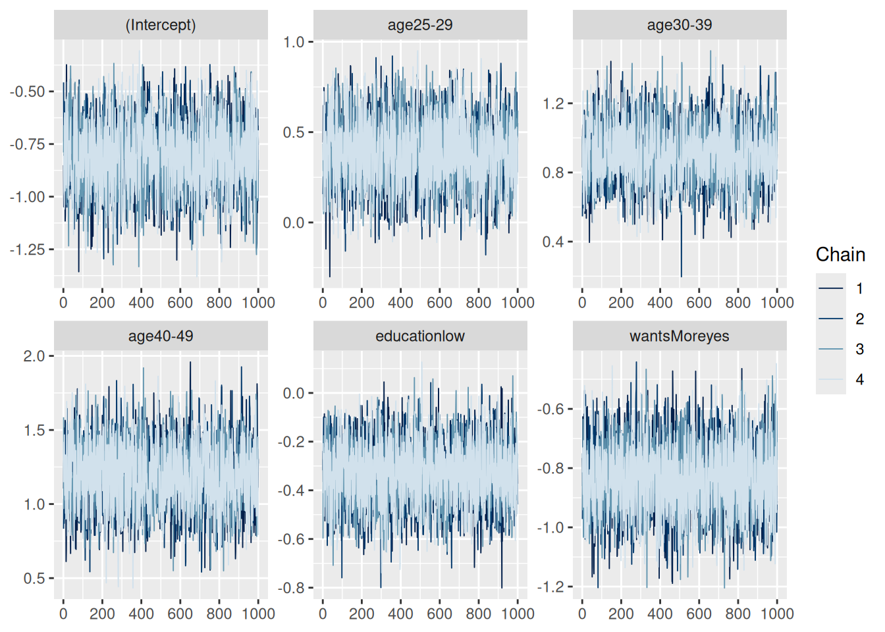
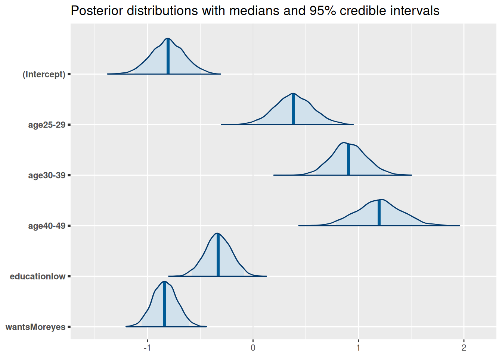
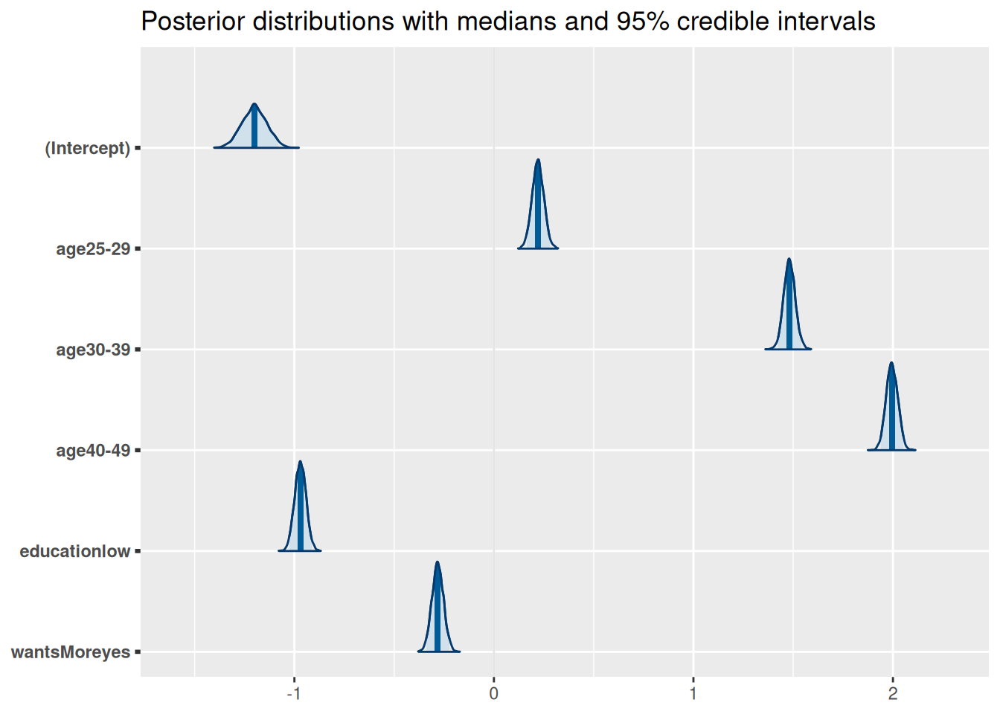

Assignment 1e is an introduction Bayesian data analysis, using Bayesian general linear models.
For this tutorial, we’ll be using cuse.csv .
5.1 Looking at the Data
# Load in datadata =read.csv('cuse.csv')# Look at the data structurehead(data)
X age education wantsMore notUsing using
1 1 <25 low yes 53 6
2 2 <25 low no 10 4
3 3 <25 high yes 212 52
4 4 <25 high no 50 10
5 5 25-29 low yes 60 14
6 6 25-29 low no 19 10
dim(data)
[1] 16 6
Our data contains 16 observations of 5 variables - a binomial matrix of how many women are using or not using birth control within 16 groups, and three categorical predictors - age, expressed as a bin, education, and whether they want more children. The first column is a duplicate of our row names. We can get rid of that:
# Remove column 1data = data[,-1]head(data)
age education wantsMore notUsing using
1 <25 low yes 53 6
2 <25 low no 10 4
3 <25 high yes 212 52
4 <25 high no 50 10
5 25-29 low yes 60 14
6 25-29 low no 19 10
5.2 Binomial GLM
Binomial general linear models are used to calculate the probability of a binomial response - in this case, whether someone is using or not using birth control. Binomial GLM response can be fed in either as a true/false set, or as a matrix of successes and failures. According to ?family, we need to feed in the data with successes first and failures second. Let’s create the matrix:
In this case, all of our variables are categorical, and they are currently stored as characters:
# Check predictor classesclass(data$age)
[1] "character"
class(data$education)
[1] "character"
class(data$wantsMore)
[1] "character"
These should function fine as categorical variables. Let’s make our GLM:
# Run GLMm1 =glm(resp ~ age + education + wantsMore, family ='binomial', data = data)summary(m1) # Summary
Call:
glm(formula = resp ~ age + education + wantsMore, family = "binomial",
data = data)
Coefficients:
Estimate Std. Error z value Pr(>|z|)
(Intercept) -0.8082 0.1590 -5.083 3.71e-07 ***
age25-29 0.3894 0.1759 2.214 0.02681 *
age30-39 0.9086 0.1646 5.519 3.40e-08 ***
age40-49 1.1892 0.2144 5.546 2.92e-08 ***
educationlow -0.3250 0.1240 -2.620 0.00879 **
wantsMoreyes -0.8330 0.1175 -7.091 1.33e-12 ***
---
Signif. codes: 0 '***' 0.001 '**' 0.01 '*' 0.05 '.' 0.1 ' ' 1
(Dispersion parameter for binomial family taken to be 1)
Null deviance: 165.772 on 15 degrees of freedom
Residual deviance: 29.917 on 10 degrees of freedom
AIC: 113.43
Number of Fisher Scoring iterations: 4
In our summary we see we have 5 predictors: The age bin, low education, and wanting more kids. High education and not wanting more kids are missing because these variables are binary, so we only need one variable to differentiate them. We can also see the values of our model coefficients, their standard errors, and the model AIC.
5.3 Making it Bayesian
The default GLM function is frequentist (that’s why we have p-values). Now lets try a Bayesian approach:
# Stanlibrary(rstanarm)
Loading required package: Rcpp
This is rstanarm version 2.32.1
- See https://mc-stan.org/rstanarm/articles/priors for changes to default priors!
- Default priors may change, so it's safest to specify priors, even if equivalent to the defaults.
- For execution on a local, multicore CPU with excess RAM we recommend calling
options(mc.cores = parallel::detectCores())
library(bayesplot)
This is bayesplot version 1.11.1
- Online documentation and vignettes at mc-stan.org/bayesplot
- bayesplot theme set to bayesplot::theme_default()
* Does _not_ affect other ggplot2 plots
* See ?bayesplot_theme_set for details on theme setting
library(shinystan)
Loading required package: shiny
This is shinystan version 2.6.0
library(ggplot2)# Run glmm2 =stan_glm(resp ~ age + education + wantsMore, family ='binomial', data = data)
Model Info:
function: stan_glm
family: binomial [logit]
formula: resp ~ age + education + wantsMore
algorithm: sampling
sample: 4000 (posterior sample size)
priors: see help('prior_summary')
observations: 16
predictors: 6
Estimates:
mean sd 10% 50% 90%
(Intercept) -0.8 0.2 -1.0 -0.8 -0.6
age25-29 0.4 0.2 0.2 0.4 0.6
age30-39 0.9 0.2 0.7 0.9 1.1
age40-49 1.2 0.2 0.9 1.2 1.5
educationlow -0.3 0.1 -0.5 -0.3 -0.2
wantsMoreyes -0.8 0.1 -1.0 -0.8 -0.7
Fit Diagnostics:
mean sd 10% 50% 90%
mean_PPD 31.7 1.6 29.8 31.7 33.8
The mean_ppd is the sample average posterior predictive distribution of the outcome variable (for details see help('summary.stanreg')).
MCMC diagnostics
mcse Rhat n_eff
(Intercept) 0.0 1.0 2173
age25-29 0.0 1.0 2419
age30-39 0.0 1.0 2009
age40-49 0.0 1.0 2247
educationlow 0.0 1.0 3404
wantsMoreyes 0.0 1.0 3152
mean_PPD 0.0 1.0 4325
log-posterior 0.0 1.0 2056
For each parameter, mcse is Monte Carlo standard error, n_eff is a crude measure of effective sample size, and Rhat is the potential scale reduction factor on split chains (at convergence Rhat=1).
The stan_glm function automatically feeds our model into Stan, which is a Hamiltonian Markov Chain Monte Carlo (MCMC) sampler. Running summary on our model gives us some model diagnostics - all our Rhat values are 1 and all our n_eff values are well into the thousands, both of which are a good sign. We can also do some visual checks and tests:
# Trace plotplot(m2, 'trace')

These are trace plots, which show us the parameter values selected for each iteration of the MCMC chain. We want these to look “fuzzy” - that indicates the sampler is exploring the full range of possible values. If these lines were to be flat, that would indicate the sampler got “stuck” and didn’t sample the full posterior distributions. These look good.
Lets look at our posteriors:
# Plot parameter values with uncertaintiesplot(m2, prob_outer =0.95)
`stat_bin()` using `bins = 30`. Pick better value with `binwidth`.
These plots both give us an idea of our parameter values and their posterior distributions. The former plot shows the median parameter estimates (circle), their 50% quantiles (dark blue box), and their 95% quantiles (thin blue line). The latter shows histograms of the posterior distributions of each of our parameters.
We can also pull out our coefficients and posteriors directly
# Model posteriorsposterior <-as.matrix(m2)# Plot model posteriors (95% quantile)plot_title <-ggtitle("Posterior distributions with medians and 95% credible intervals")mcmc_areas(posterior, pars =names(m2$coefficients),prob =0.95) + plot_title

How would you interpret these plots?
5.4 Adding Priors
Lets try adding some priors:
# Run glm with priorsm3 =stan_glm(resp ~ age + education + wantsMore, family ='binomial', data = data,prior =normal(location =c(0.2, 1.5, 2, -1, -0.25), # Normal priors, meansscale =c(0.03, 0.03, 0.03, 0.03, 0.03))) # And standard deviations
# Model posteriorsposterior <-as.matrix(m3)# Plot model posteriors (95% quantile)plot_title <-ggtitle("Posterior distributions with medians and 95% credible intervals")mcmc_areas(posterior, pars =names(m3$coefficients),prob =0.95) + plot_title

You can also look at all of your Stan model results using shinystan by running launch_shinystan(model). Try it out on your end (it doesn’t work in markdown)
5.5 Tips for your Assignment:
Some things you may want to think about for your assignment:
How do the results of these three models differ? Why or why not?
Do you believe certain models are more or less correct? Why or why not?
How would you interpret your statistical results biologically? You don’t have to be right, but don’t be vague, and don’t contradict your results.